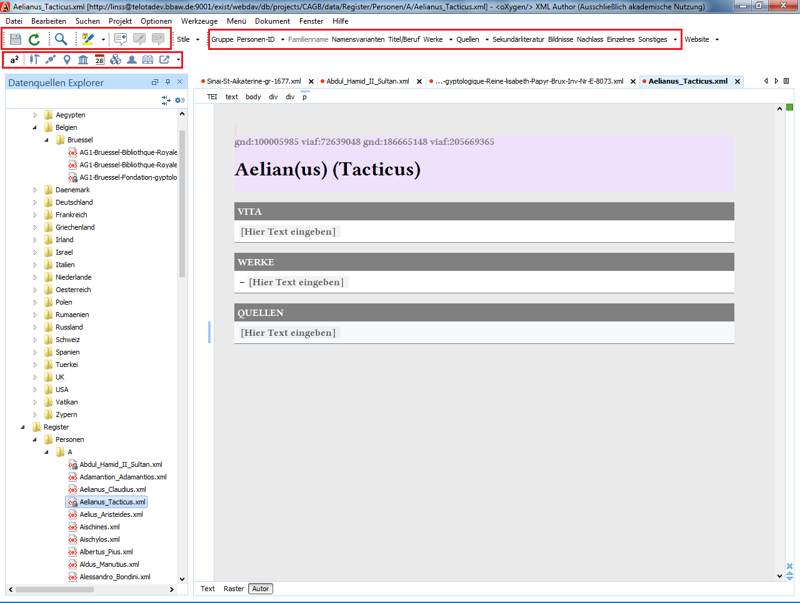
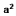

In der Arbeitsumgebung steht ein zentrales Personenregister zur Verfügung. Das Register besteht aus einzelnen XML-Dateien, die jeweils die Daten zu einer Person enthalten. Die TEI-XML-Struktur dieser Personendateien basiert auf den „Biogrammen“ des Handschriftenzentrums Teuchos.
Eine Personendatei verfügt über mehrere Abschnitte (<div/>) in denen unterschiedliche Informationen zur Person hinterlegt werden kann. Für alle Abschnitte steht eine Aktion in der Werkzeugleiste zur Verfügung, mit der dieses Strukturelement eingefügt werden kann. Ergänzungen können dann einfach durch das Setzen eines neuen Absatzes (Returntaste) erfolgen.

Neue Personendatei anlegen
Über das Kontextmenü (rechte Maustaste im Dateibaum) kann im entsprechenden Ordner (Personen > [Buchstabe]) eine neue Personendatei angelegt werden. Dazu ist lediglich im erscheinenden Kontextmenü unter „Frameworkvorlagen > CAGB“ die Option „Personeneintrag“ auszuwählen. In der Vorlage bereits angelegt sind die Abschnitte „Vita“, „Werke“ und „Quellen“.
Der Name und die Lebensdaten werden in head notiert. Der gesamte Name wird dabei mit <persName/> umgeben, der Familienname zusätzlich mit <surname/> ausgezeichnet. Unter mehreren Vornamen kann einer als Rufname mit <i> hervorgehoben:
<head type=“entry“> <persName key=“gnd:118850210 lccn:n86112270“ type=“entry“> <surname>Bekker</surname>, August <i>Immanuel </i> </persName> (<date from-iso=“1785“ to-iso=“1871“>1785–1871</date>) </head>
Lebensdaten und Namen
Die Lebensdaten werden mit <date/> ausgezeichnet, wobei die Daten nochmals in formatierter Form in den Attributen @from-iso und @to-iso hinterlegt werden müssen. 38 Für jede Person wird automatisch bei der Neuerstellung oder beim Import durch TELOTA eine CAGB-interne Identifikationsnummer generiert. Später können in <persName/> außerdem noch weitere Identifikationsnummern, wie z.B. die GND (Gemeinsame Normdatei der Deutschen Nationalbibliothek) hinterlegt werden.
Vita
Angaben zum Lebenslauf werden im Abschnitt „Vita“ (div[@type=‘life‘]) mit einfachen Absätzen hinterlegt. Falls vorhanden, können Angaben zu einer Festschrift, in einem Unterabschnitt zu Vita notiert werden.
Weitere Informationen zur Person (Werkzeugleiste 2)
In weiteren Abschnitten können andere Informationen, wie Titel oder Publikationen der Person notiert werden. Der Aufbau ist dabei immer gleich, lediglich der Wert von @subtype sowie der Inhalt von <head/> wird anders gesetzt. Beispiel:
<div type=“section“ subtype=“publications“> <head type=“publications“>Werke</head> <p>Gesammelte Abhandlungen. ...</p> <p>Heraclitea. ...</p> <div type=“subsection“ subtype=“letters“> <head type=“letters“>Briefe</head> <p>...</p> </div> </div>
Als mögliche Abschnitte stehen zur Verfügung:
| Bezeichnung | Attributwert von @type | Bemerkungen |
|---|---|---|
| Namensvarianten | otherNames | Hier können eventuelle Namensvariationen notiert werden. |
| Titel/Beruf | titles | Hier können Titel und Berufe notiert werden. |
| Werke | publications | Möglicher Unterabschnitt sind „Briefe“ (letters) und "Kleinere Beiträge" (smallpub); außerdem können noch nach Bedarf individuelle Untergruppen eingefügt werden |
| Quellen | sources | Möglicher Unterabschnitte sind "Nekrologe" (obituaries), „Würdigungen“ (otherbio) und "Ungedruckte Quellen" (unpublished); außerdem können noch nach Bedarf individuelle Untergruppen eingefügt werden |
| Sekundärliteratur | literature | Hier kann Sekundärliteratur notiert werden. |
| Bildnisse | depictions | |
| Nachlass | legacy | |
| Einzelnes | singleDetails |
Sonstiges
Es gibt die Möglichkeit den Status einer Registerdatei als "Entwurf" oder "Final" zu markieren. Diese Auszeichnung ist nicht zur Veröffentlichung bestimmt. Ebenso ist es möglich Notizfeld zu erstellen, in dem Bearbeitungsbemerkungen festgeahlten werden können. Diese werden auch nicht veröffentlicht.
Werkzeugleiste 3
Zeichen hochstellen
Tätigkeit/ Beruf auszeichnen
Titel/ Bezeichnug auszeichnen
Ortsname
Institution